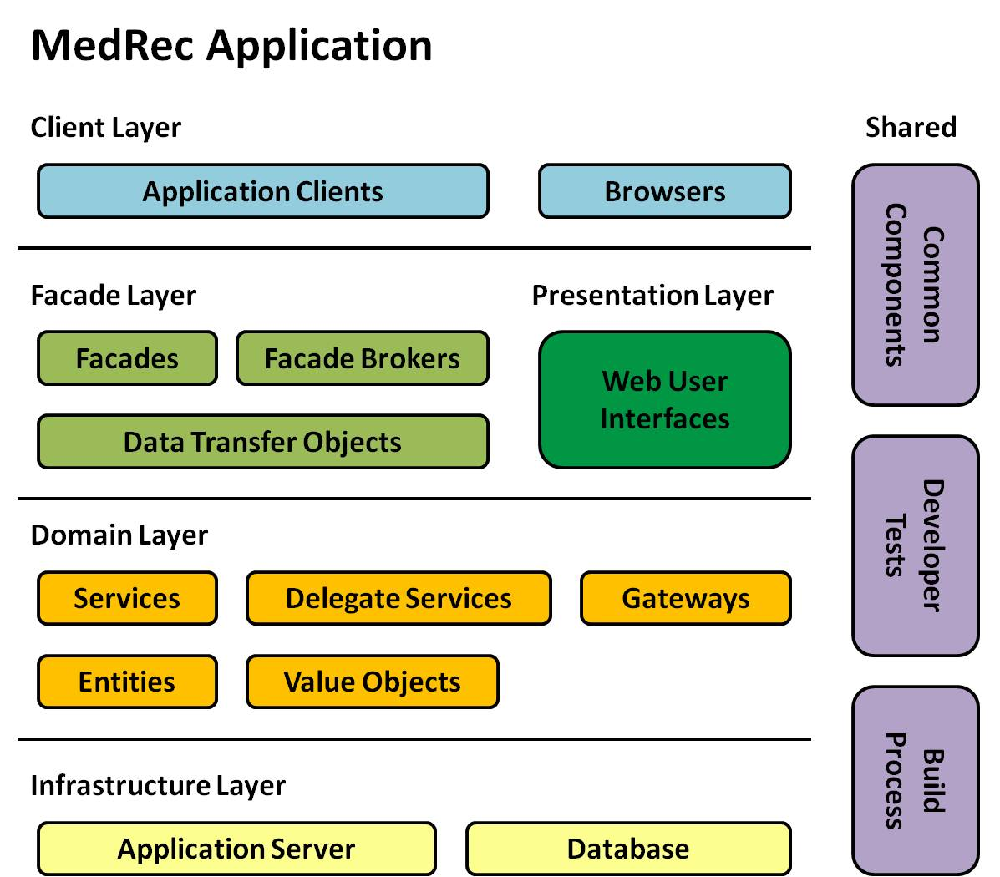
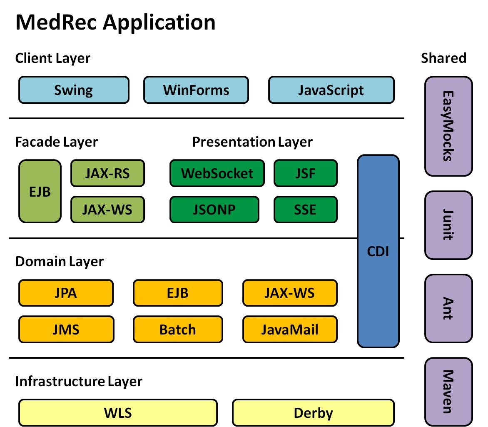

The MedRec application closely follows the standard industry trends, extensively utilizing some of the recent methodologies and technologies, in particular:
In sum, MedRec presents a comprehensive Java EE architectural guideline for WebLogic Server programmers and users.
The following sections provide a brief overview of the MedRec application design based on the previous considerations. For additional related technical resources, see Additional Resources.
The MedRec application features these major design building blocks:
entity and value object is that the former has distinct identity while
the latter does not. Most of them are JPA mapped objects.
services, improving service composition in an SOA environment. They encapsulate the
remoting mechanisms and perform necessary data model conversions, which in turn hides the details of
distributed computing (such as remote interfaces and special data models) from clients.
entities, value
objects, gateways, and so on to work out problems. They are thin objects and do not
contain much business logic themselves. They are business-focused, and they rarely call into middleware
APIs directly.
services.
Facades are mainly responsible for exposing the services to remote clients. In MedRec, some
additional data transfer objects are introduced to improve data transfer in a distributed environment.
Additionally, various facade brokers are introduced to attach different protocol bindings, such as
RMI/IIOP, JMS, JAX-WS, JAX-RS, and so on, to facades.
services located
in the same WebLogic Server instance.
These featured build blocks are the foundation of the major MedRec application modules and the essentials of a Java EE server-side application.
In the MedRec application, the previous building blocks are organized in an architecture that consists of several clearly-defined layers:
domain models.facades.web user interfaces.The following diagram shows the basic architecture of the MedRec application.

The domain layer is the central piece of the server-side application. The facade layer and
presentation layer are constructed around the domain layer to expose its functionality to
different types of clients. The facade layer interacts with remote application
clients (maybe also including some AJAX clients inside browser), while the presentation
layer interacts with browsers. Unlike other architectures, the presentation
layer here never calls into the facade layer, so these two layers are in a parallel
relationship.
One could consider the infrastructure layer and client layer to be outside the boundary of
a server-side application. Generally, only the upper layer depends on the lower layer within the same application
(module), but not vice versa.
Common components, developer tests and build process are typically involved in
all the layers.
The MedRec application uses Java EE (including Oracle add-on features) and Java SE technologies extensively. In addition, some third-party technologies are also introduced to implement the functionality that is not well covered by the standard Java platform as well as WebLogic Server.
The following graphic provides a summary on how the MedRec application uses the various technologies in its overall architecture.

Both the domain layer and facade layer make use of JAX-WS, JAX-RS, JMS, and so on, but the
difference is that the facade layer mainly uses them to expose remote services, while the
domain layer mainly uses them to access remote services.
The MedRec application does not use many third-party libraries, even though there are some excellent open source libraries available that would be very helpful. This is because the main focus of MedRec is to show how to program using Java EE on WebLogic Server.
Copyright © 1996, 2019, Oracle and/or its affiliates. All rights reserved.